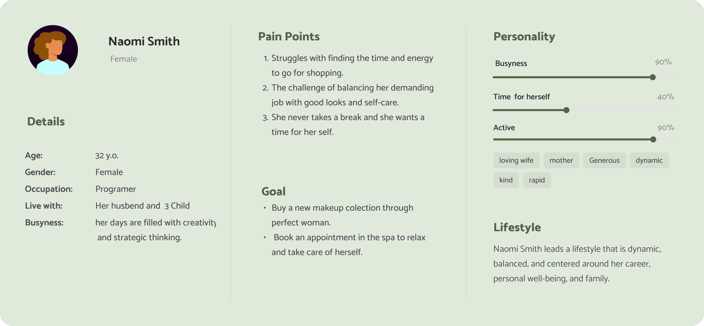
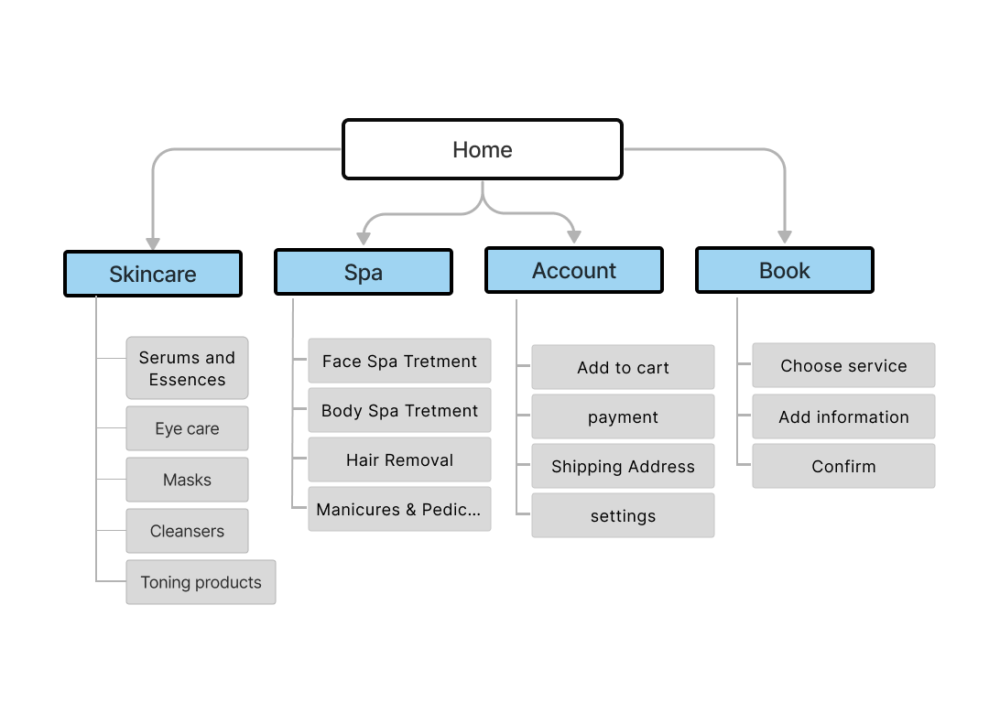
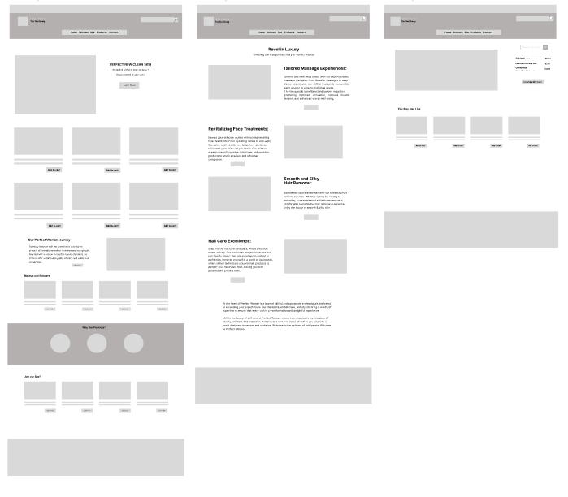
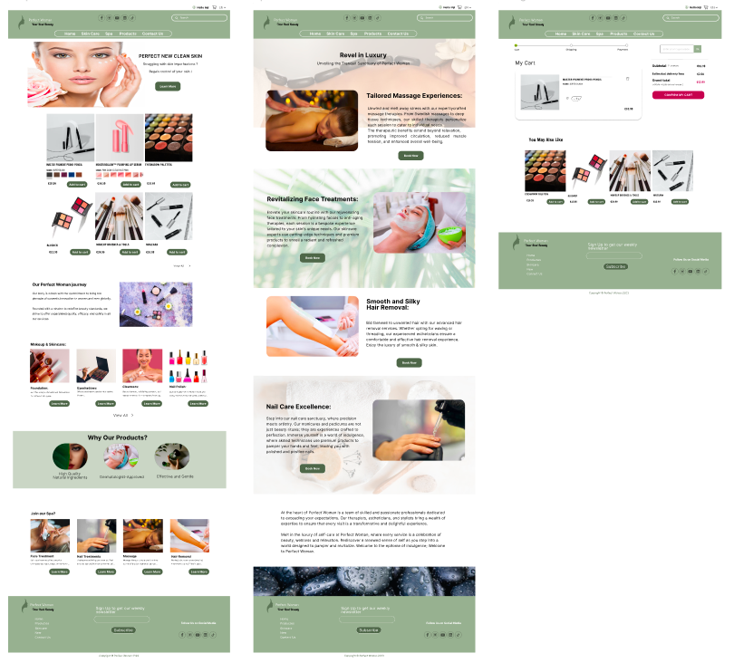

Inji Alasttal
Perfect Woman- A Website Experience for Beauty and Relaxation
Challenge: Build a Cosmetics Web that help users to order or book in Spa
Deliverables: User research report. Affinity map. Task flows. Wireframe. UI. Prototype.
Role: Product Designer
A Perfect Woman is a responsive Web that helps users find their favorite beauty products and find time to relax by booking in a spa.
Overview
Perfect Woman is a modern, website platform designed to help users discover their favorite beauty products and book spa appointments easliy. Tailored for busy women, it combines convenience with an attractive design, enabling them to indulge in self-care and relaxation with just a few clicks.
Challenges
Designing a website that enables smooth navigation between shopping for beauty products and booking spa appointments. Ensuring users can easily add or remove items from their cart without interruptions.
Goals
- Create a professional, trustworthy, and user-friendly experience.
- Simplify navigation, allowing users to flow effortlessly between pages.
- Ensure a seamless shopping and booking experience with a user-friendly cart system.
Define:
Proplem:
For many, especially working women and mothers, juggling responsibilities often leaves little time for shopping or relaxation. Women often need quick solutions to shop for their favorite makeup products or book a spa appointment.
Solution
Perfect Woman offers a website that empowers women to shop for beauty products or book a spa appointment during a break at work or from the comfort of their homes.
Empathise:
Research and persona:
During the research phase, I conducted a competitor analysis, a business analysis, and a sitemap. I was able to gain a thorough understanding of the market, potential customers, and key product requirements. I created a persona to collect data and conduct research based on it. The story of the persona She’s a working mother with three children. She struggles to find time for herself, let alone shop or relax. Despite her busy schedule, she cherishes her self-care routines and seeks quick, accessible solutions.

IDEATION
For a user research, I conducted a study and created the personas to analyze pain points and determine priorities. Then I generated Sitemap to understand where in the process users were having troubles, created sketches, Lo-Fi and Hi-Fi prototypes. The project timeline is two weeks. Let’s dive into the process of creating a responsive website.
Sketch (Paper Wireframe)
I started to draw my paper sketches. I choose between two of what I would combine on my low-fi wireframe. My draw was bad, but as a designer, I have to make sketches with design ideas “quantity, not quality.” 🙂
.jpeg)
Sitemap (Information Architecture)
In the site map, i’ll make sure to uncover a seamless user experience with a sitemap designed for flow. From spa treatments to beauty products, you can easily navigate through our intuitive interface. Explore our selected departments, including spa services, beauty products and skincare tips.
Wireframe:
I fleshed out the UI sketches, created mid-fi wireframes, and got down the clickable prototype for validation testing. I conducted validation testing, and found out a couple of issues need to be adjusted. For example, to make filters more prominent on the landing page so it can give user a clear signal that it is the primary call to action.
Hi-Fi Prototype:
After validating my mid-Fi prototype, i made iterations to my design, and moved into Hi-Fi phase. I created Hi-Fi prototype for the buyer’s flow including home page, Book at spa and add to cart
Animated Prototype: :
To illustrate the user journey, I created an animated prototype demonstrating the flow from landing on the homepage to adding an item to the cart, navigating the site, and booking a spa service.
Validation
Responsive design:
The web is now mainly perfect and a way to go with these following: Effortless Shopping: Add, remove, and browse products with ease. Quick Spa Booking: Book your relaxation time with just a few clicks. Seamless Navigation: Move fluidly between pages without confusion.

Conclusion:
The Perfect Woman website epitomizes the blend of elegance and functionality. With its carefully crafted user interface, it caters to busy women seeking convenience without compromising on quality. From shopping for beauty products to scheduling much-needed relaxation time, Perfect Woman simplifies the process, offering a stress-free digital sanctuary for self-care.